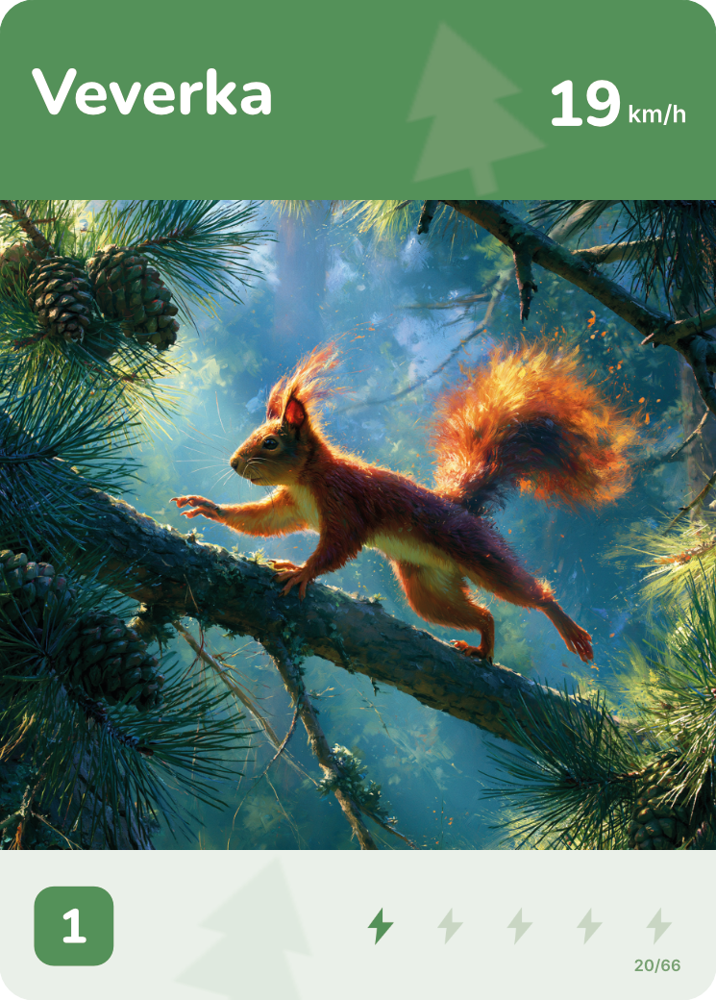

ZVĚROKLÁNÍ
Kdo je rychlejší?
Karetní souboj zvířat — otoč kartu, porovnej, vyšší bere. Od 4 let.
Napiš námKlikni a otoč kartu
Co to je
Zvěroklání je karetní hra, kde proti sobě stojí zvířata. V téhle edici rozhoduje rychlost — od geparda po lenochoda. Každá karta je skutečné zvíře se skutečnými čísly.
Jak se hraje
V jedné krabičce jsou dva způsoby hraní — od rychlého klání pro nejmenší po napínavější bitvu s kostkou.
Šest prostředí
66 zvířat, šest světů. V každém 11 karet — od geparda po lenochoda.
Klikni na kartu ve vějíři, nebo použij šipky a Enter.
Jak vznikla
Jednou přišel syn domů s karetní hrou, kterou si pořídil na škole v přírodě. Jednalo se v podstatě o kartičky zvířat, které umožňovali hrát několik různých variant z nichž suverénně největší úspěch měla varianta vyšší bere, kdy to hrál hodiny a hodiny s mladším bráchou, s každým z rodiny, s kamarády...
A to nás inspirovalo k tomu, abychom si navrhli vlastní hru s vlastními zvířátky, mechanikami, která by vylepšovala koncept vyšší bere. A protože nás to opravdu bavilo, tak ji chceme dát i vám.

Napiš nám
Máš nápad, našel jsi chybu, nebo chceš vědět, kdy půjde balíček pořídit? Napiš nám.
petr.matl42@gmail.com